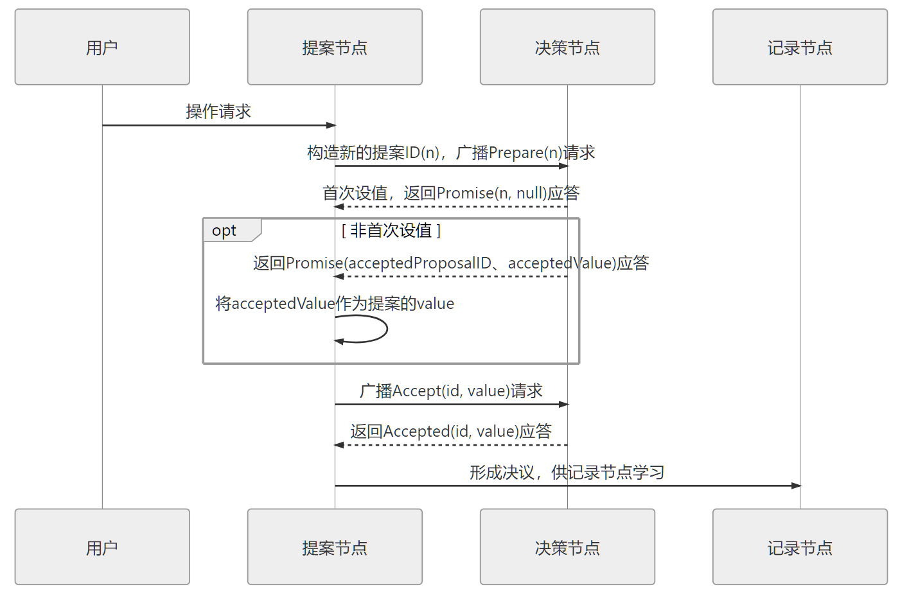

《凤凰架构》阅读笔记（五）：分布式共识算法
保障分布式系统数据不会丢失：
- 可靠性：多个节点拥有一致的数据副本。
- 可用性：在不可靠网络中，各节点之间数据可正确复制。
数据复制方法：
- 状态转移（State Transfer）：把数据变化情况在各个节点间的复制视作事务性操作，系统里每个节点都反馈成功地完成写入后，数据变化才宣告成功。可通过 2PC/3PC 实现（比如 MySQL Cluster 全同步复制），然而会牺牲可用性。
- 操作转移（Operation Transfer）：即通过一连串操作（而非直接赋予目标状态），令所有源状态相同的节点转换到目标状态。不要求每条指令同时开始、同步完成，主要确保同步期间内部状态不能被外部观察，称为 状态机复制。
能使用确定的操作，促使状态间产生确定的转移结果的计算模型，在计算机科学中被称为状态机（State Machine）：任何初始状态一样的状态机，执行的命令序列一样，则最终达到的状态也一样。
多参与者进行协商共识可理解为系统中存在多个完全相同的状态机（参与者），只要其起始状态和执行命令序列完全一致，它们最终就能保持一致。
Quorum 机制：分布式环境下必然存在 分区，因此只要过半节点完成状态转换就认为数据变化已被正确存储到系统中，大多数节点达成一致，而容忍最多不超过半数节点失联（因此可以通过增加节点提高可用性），这样在外部看来始终表现为一致，这个过程称为 协商共识（Consensus）。
作者认为共识（Consensus）与一致性（Consistency）是有区别的：前者指达成一致性的方法和过程，后者指数据不同副本之间的差异。
Paxos
Paxos 算法是一种基于消息传递的协商共识算法（基于操作转移模型），Raft、ZAB 等算法都是在此基础上发展出来的。
算法流程
有以下三种节点：
- 提案节点（Proposer）：发起 提案（Proposal），即对某个值进行设置操作（类比日志记录），设置成功就不会丢失（也不可变）。
- 决策节点（Acceptor）：应答提案，决定提案是否可被投票、可被接受。提案一旦得到过半数决策节点接受，则即被 批准（Accept），该值不能再被更改、不会丢失，被所有节点接受。应该被设定为奇数个，在系统初始化时每个节点都知道决策节点的数量、地址等信息。
- 记录节点（Learner）：不参与提案和决策，从提案、决策节点中学习已经达成共识的提案。比如少数派节点从网络分区中恢复时就称为 Learner。
所有节点平等、可承担一或多种角色。要实现各节点就某个提案达成一致，需要考虑：
- 节点间通信不可靠，提案或批准消息都可能延迟送达或丢失，但不存在消息传递错误的情况。
- 系统外部可由多名用户可并发访问（如只有一名用户或串行访问，基于 Quorum 机制即可保证正确读写）。
读写操作既要考虑并发控制，还要考虑通信故障（如在某节点取得锁后、释放锁前失联，则导致整个操作被无限阻塞）因此引入抢占锁机制。
准备阶段（Prepare）
相当于抢占锁过程，某提案节点发起提案前，必须先向所有决策节点广播 Prepare 请求：附带全局唯一的数字 n 作为提案 ID，决策节点收到后给予提案节点：
两个承诺：不再接受提案 ID <= n 的 Prepare 请求，以及提案 ID < n 的 Accept 请求。
一个应答：不违背以前作出的承诺的前提下，回复已经批准过的提案中 ID 最大的一个所设定的值和提案 ID。如果该值从来没有被任何提案设定，则返回空值。如果违反此前承诺（收到的提案 ID 不是决策节点收到过的最大的），忽略此 Prepare 请求。
批准阶段（Accept）
当提案节点收到了多数派决策节点的 Promise 应答后有两种情况：
- 所有响应的决策节点此前都没有批准过该值，则它可随意决定设定值，将选定的值与提案 ID 构成二元组“(id, value)”的 Accept 请求广播给全部决策节点。
- 响应的决策节点中，已经有至少一个节点的应答中包含有值，则它必须从应答中找出并接受提案 ID 最大值，构成二元组“(id, maxAcceptValue)”的 Accept 请求，广播给全部的决策节点。
当每个决策节点收到 Accept 请求，在不违背以前作出的承诺的前提下，接收并持久化对当前提案 ID 和提案附带的值。如果违反此前的承诺（收到的提案 ID 不是决策节点收到过的最大者），对此 Accept 请求不予理会。
当提案节点收到了多数派决策节点的 Accepted 应答后协商结束，将共识决议发送给所有记录节点学习。

工作实例参考：Paxos